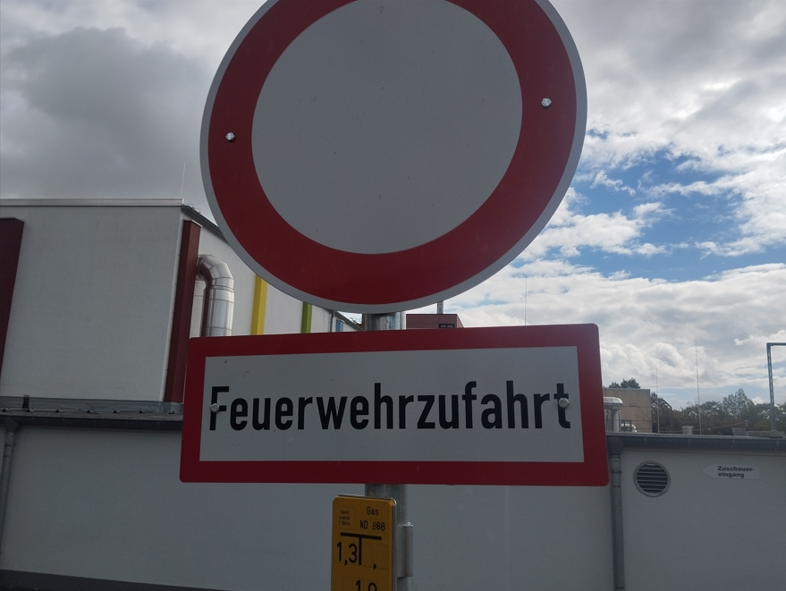

Feuerwehrzufahrt
assistant
- Source
- Verkehrszeichen vor einer Sporthalle
- Place
- Street
- Situation
- Parken
- Topic
- Verkehrszeichen
Contents

Transcription
Feuerwehrzufahrt
Zuschauereingang
Gas
Meaning
The round white sign with a red ring means: no vehicles of any kind (Verbot für Fahrzeuge aller Art). The sign below says why: this is the access road for the fire brigade (Feuerwehrzufahrt). It must always stay clear, so never park or stop here. The small yellow sign marks a gas valve under the ground. On the wall, an arrow shows the way to the spectators' entrance (Zuschauereingang).